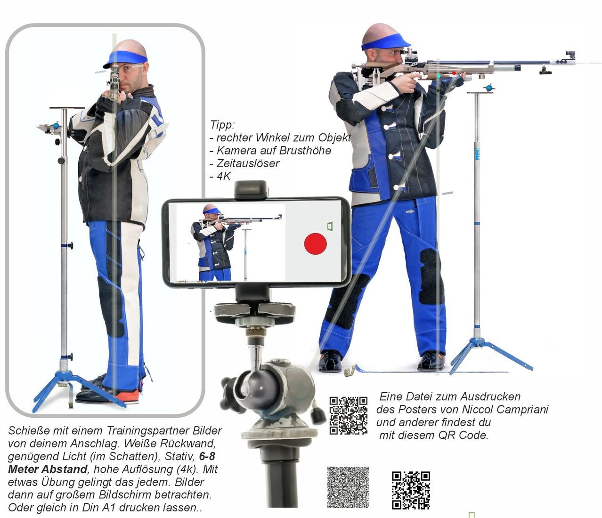

La position debout
Sans bretelle et sans appui au sol autre que les pieds, la position debout est la plus exigeante de la carabine. Elle se construit de bas en haut, comme un bâtiment, et se vérifie régulièrement. Images et légendes d’après Salluzo.
Le placement des pieds
Tout part des pieds : leur écartement et leur orientation fixent la direction naturelle du corps et de l’arme. Un bon placement se reproduit à l’identique à chaque séance.


Construire la position
Pour la rétroversion du bassin et la stabilité, voir aussi la stabilité sur le site Pistolet ↗.
Se photographier pour se corriger

Comment faire
- Avec un partenaire d’entraînement, devant un mur blanc.
- Assez de lumière, mais à l’ombre.
- Un trépied à 6 à 8 mètres, l’appareil à hauteur de poitrine, bien perpendiculaire au tireur.
- Le retardateur, et la plus haute résolution (4K).
Ensuite
Regardez les photos sur un grand écran, ou faites-les imprimer en grand format (A1). On y voit tout de suite ce que l’on ne sent pas : la tête qui penche, l’épaule qui monte, le bassin qui part, le poids mal réparti. Refaites les photos de temps en temps pour vérifier que la position n’a pas dérivé.